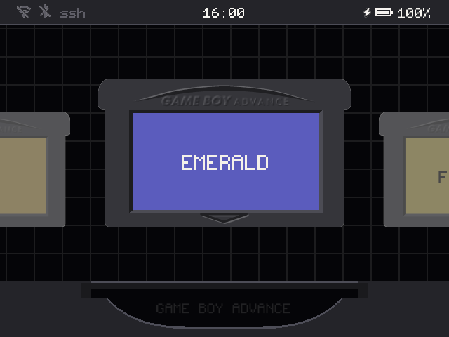
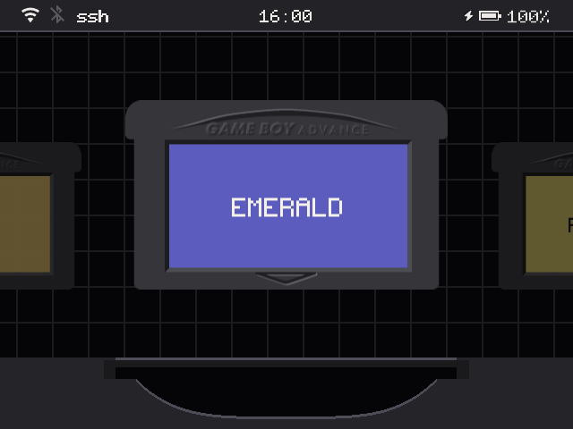
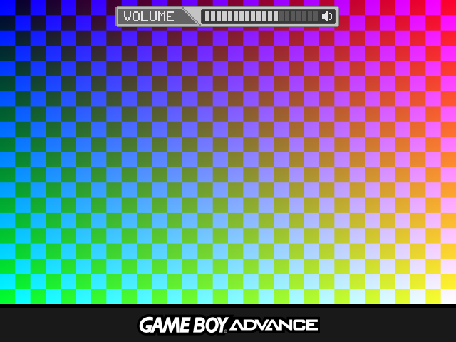

A Game Boy-centric frontend for Anbernic H700 handhelds running BaseOS. It plays GBA, GBC and GB games, and only those, on a shelf of cartridges you slide into a slot.
Made for the RG35XX SP first; the rest of the H700 family follows.


